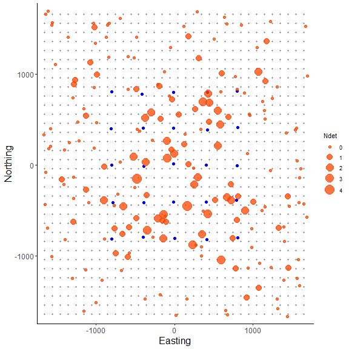
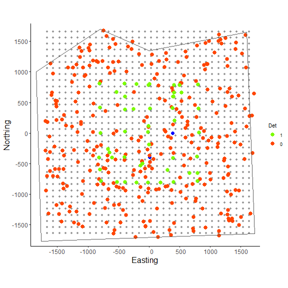
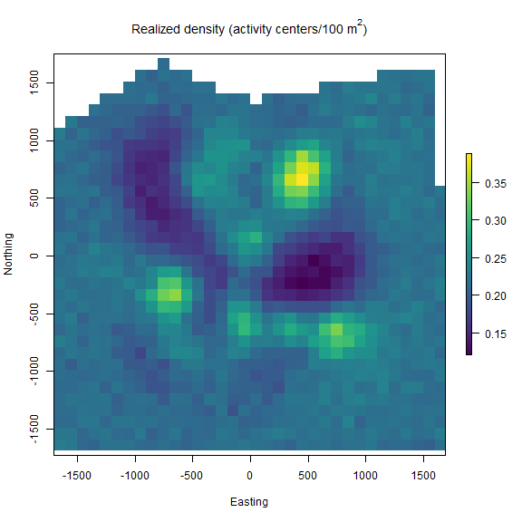

Classic SCR models: continuous state-space and marked individuals
Daniel Eacker
2022-05-02
classic_scr.RmdIntroduction
The first vignette of the ‘localSCR’ package covers what I define as a set of ‘classic’ Bayesian spatial capture-recapture (SCR) models (Royle et al. 2014). These models are designed to model SCR data for ‘marked’ or ‘unmarked’ individuals under the assumption of uniformly distributed activity centers (i.e,. a continuous state-space). Although many distance detection functions are possible, the package currently includes only a bivariate normal model of space use, which is commonly employed in the literature. The package is meant to ease implementation of Bayesian SCR models using the ‘nimble’ package (de Valpine et a. 2022), which allows for increased flexibilty with the ability for the user to include custom functions and assign different algorithms to specific model parameters. I took advantage of this functionality with the goal of building a simple, straightforward workflow that was flexible enough to handle most mainstream SCR analysis problems. Visit https://r-nimble.org/download for information on installing ‘nimble’ and Rtools on your computer.
Implementation
The ‘localSCR’ package implements Bayesian SCR models using the ‘nimble’ package (de Valpine et a. 2022) following methods described in Royle et al. (2014). We take advantage of recent developments in computation of SCR models. In this tutorial, three methods are implemented to decrease computational run time:
- Block updating of x and y activity center coordinates (Turek et al. 2021)
- Using vectorized declarations for traps in distance function calculations
- Separating the data augmentation process into two steps (Chandler 2018)
In some SCR problems, there are landscape features that create ‘unsuitable’ habitat for the study species. Habitat masks are used to account for these features and designate suitable (1) or unsuitable (0) habitat, and can be represented as a matrix or array of binary values. We follow the methods of Milleret et al. (2019) to implement the “ones” trick to account for habitat suitability. This restricts the possible locations of latent activity centers to only suitable habitat. The ‘localSCR’ package provides functions to construct a habitat mask from either raster or polygon data.
Finally, in some SCR designs, clusters of trap arrays may be spread out over the study area such that individuals can only be detected at one of multiple trap arrays (e.g., Furnas et al. 2018). This necessitates including the traps as a 3-dimensional array, using a site identifier to track which site a detected or augmented individual belongs to, and using a dynamic indexing in the model.
Functions used from ‘localSCR’ package:
-
get_classic()grabs template model for given inputs using thenimbleCode()function -
grid_classic()define state-space grid and extent -
initialize_classic()generate starting locations for activity area centers -
mask_polygon()create habitat mask matrix or array from polygon -
nimSummary()summarize lists of Markov Chain Monte Carlo (MCMC) output -
realized_density()generate realized density surface from MCMC output -
rescale_classic()rescale inputs to prepare data for using habitat mask -
run_classic()wrapper function to run classic models using ‘nimble’ package -
sim_classic()simulate basic spatial capture-recapture data
Turtorial
This tutorial includes four parts:
- Create traps (or detectors) and then construct a state-space
- Simulate ‘classic’ SCR data using state-space extent
- Workflow for 2D trap array including sex-specific scaling parameter and habitat mask
- Workflow for 3D trap array including sex-specific scaling parameter
and habitat mask
# load 'localSCR' package
library(localSCR)
#> Loading required package: nimble
#> nimble version 0.12.2 is loaded.
#> For more information on NIMBLE and a User Manual,
#> please visit https://R-nimble.org.
#>
#> Attaching package: 'nimble'
#> The following object is masked from 'package:stats':
#>
#> simulate(1) Simulate a single trap array with random positional noise and create state-space
# simulate a single trap array with random positional noise
x <- seq(-800, 800, length.out = 5)
y <- seq(-800, 800, length.out = 5)
traps <- as.matrix(expand.grid(x = x, y = y))
set.seed(200)
traps <- traps + runif(prod(dim(traps)),-20,20)
mysigma = 300 # simulate sigma of 300 m
mycrs = 32608 # EPSG for WGS 84 / UTM zone 8N
# create state-space
Grid = grid_classic(X = traps, crs_ = mycrs, buff = 3*mysigma, res = 100)
# make ggplot of grid and trap locations
library(ggplot2)
ggplot() + geom_point(data=as.data.frame(Grid$grid),aes(x=x,y=y),color="grey60",
size=1.25) +
geom_point(data=as.data.frame(traps),aes(x=x,y=y),color="blue",size=2) +
theme_classic() + ylab("Northing") + xlab("Easting") +
scale_x_continuous(expand=c(-0.1, 0.1)) +
scale_y_continuous(expand=c(-0.1, 0.1)) +
theme(axis.text = element_text(size=12),axis.title = element_text(size=16))

Here, we can see the state-space grid that was created from
grid_classic(). Also, the traps (or detectors) are plotted
over top in blue. We arbitrarily chose a grid resolution of 100 in this
example (i.g., res = 100), but this will vary by problem.
In situations involving habitat masks or discrete models, it is prudent
to test the effect of different grid resolutions on the estimated
abundance and density in SCR models (see Royle et al. 2014). Also, note
the use to the EPSG code to define the coordinate reference system for
our state-space (see https://epsg.io/32608).
sim_classic(). Note for this example, we will simulate a
‘true’ population size of 200 individuals (N = 200), 4
sampling occasions (K = 4), a scaling parameter
(sigma_) of 300 m, a baseline encounter probability of 0.10
(base_encounter = 0.10), no sex-specificity
(prop_sex = 1), and no habitat mask
(hab_mask = FALSE). We also use setSeed = 100
to make the simulation reproducible. We provide the function the extent
of the state-space output from grid_classic() as
ext = Grid$ext. Note that Grid is a list.
(2) Simulate SCR data and make a plot of it.
# simulate SCR data
data3d = sim_classic(X = traps, ext = Grid$ext, crs_ = mycrs,
sigma_ = mysigma, prop_sex = 1,N = 200, K = 4,
base_encounter = 0.10, enc_dist = "binomial",
hab_mask = FALSE, setSeed = 100)
# inspect simulated data
str(data3d)
#> List of 3
#> $ y : int [1:200, 1:25, 1:4] 0 0 0 0 0 0 0 0 0 0 ...
#> $ sex: int [1:200] 1 1 1 1 1 1 1 1 1 1 ...
#> $ s : num [1:200, 1:2] -658 -830 182 -1521 -106 ...
#> ..- attr(*, "dimnames")=List of 2
#> .. ..$ : NULL
#> .. ..$ : chr [1:2] "sx" "sy"
# bind simulated activity centers with vector of the number of individual detections
sdata = as.data.frame(cbind(data3d$s,Ndet=apply(data3d$y,1,sum)))
# make ggplot
ggplot() + geom_point(data=as.data.frame(Grid$grid),aes(x=x,y=y),color="grey60",
size=1.25) +
geom_point(data=as.data.frame(traps),aes(x=x,y=y),color="blue",size=2) +
geom_point(data=sdata,aes(x=sx,y=sy,size=Ndet),color="orangered",alpha=0.75) +
theme_classic() + ylab("Northing") + xlab("Easting") +
scale_x_continuous(expand=c(0.025, 0.025)) + scale_size_continuous(range = c(2, 7)) +
scale_y_continuous(expand=c(0.025, 0.025)) +
theme(axis.text = element_text(size=12),axis.title = element_text(size=16))
In the plot we can see the point sizes are relative to the number of
detections (‘Ndet’) for each simulated individual. Although most
individuals detected near or on the grid have a large number of
detections, we still pick up some individuals multiple times on the edge
of the grid just by chance. Also, the point pattern appears random
because we are drawing simulated activity center coordinates using
runif(), which adheres to our assumption of a random
distribution of individual activity centers across the state-space in
our classic SCR analysis.
Next, we’ll create the same trap array but we’ll set a sex-specific
scaling parameter (sigma_) of 220 m and 300 m, which could
represent a smaller female and larger male activity area sizes
respectively. In order to fully specify a sex-specific scaling parameter
in sim_classic(), we need to set
0 > prop_sex < 1, otherwise the simulation will only
use a single scaling parameter. In the example, we also specify
enc_dist = "binomial" to use a binomial encounter
distribution; the other available option is the Poisson distribution
(enc_dist = "poisson").
We add on an additional layer of complexity by introducing a habitat
mask. After constructing a polygon feature using the ‘sf’ package, we
then use the function mask_polygon() to build a habitat
mask as a matrix object. The habitat matrix is either ‘0’ (unsuitable)
or ‘1’ (suitable). In the habitat matrix the rows represent the
y-coordinate (“Northing”) of the state-space grid and the columns
represent the x-coordinate (“Easting”) of the state-space grid. We’ll
use this habitat matrix as data below in this part of the tutorial.
initialize_classic(), which
generates plausible starting activity center locations for all
individuals. Note that for detected individuals, the function uses the
mean capture location as the starting location while random locations
are used for augmented individuals. Given our simulated population size
of 200, we specify the total augmented population size (detected +
augmented individuals) at 400 (M = 400).
(3) Workflow for simple SCR model with sex-specific sigma, binomial encounter distribution, and habitat mask
# simulate a single trap array with random positional noise
x <- seq(-800, 800, length.out = 5)
y <- seq(-800, 800, length.out = 5)
traps <- as.matrix(expand.grid(x = x, y = y))
set.seed(200)
traps <- traps + runif(prod(dim(traps)),-20,20)
mysigma = c(220, 300) # simulate sex-specific
mycrs = 32608 # EPSG for WGS 84 / UTM zone 8N
pixelWidth = 100 # store pixelWidth or grid resolution
# create state-space grid and extent
Grid = grid_classic(X = traps, crs_ = mycrs, buff = 3*max(mysigma), res = pixelWidth)
# create polygon for mask
library(sf)
poly = st_sfc(st_polygon(x=list(matrix(c(-1765,-1765,1730,-1650,1600,1650,0,1350,
-800,1700,-1850,1000,-1765,-1765),ncol=2, byrow=TRUE))), crs = mycrs)
# create habitat mask
hab_mask = mask_polygon(poly = poly, grid = Grid$grid, crs_ = mycrs,
prev_mask = NULL)
# simulate data for uniform state-space and habitat mask
data3d = sim_classic(X = traps, ext = Grid$ext, crs_ = mycrs, sigma_ = mysigma, prop_sex = 0.7,
N = 200, K = 4, base_encounter = 0.15, enc_dist = "binomial",
hab_mask = hab_mask, setSeed = 100)
# total augmented population size
M = 400
# get initial activity center starting values
s.st3d = initialize_classic(y=data3d$y, M=M, X=traps, buff = ext=Grid$ext,
hab_mask = hab_mask)
# bind simulated activity centers with vector of either 1 (detected) or 0 (not detected)
s.stdata = as.data.frame(cbind(s.st3d,Det=c(as.numeric(apply(data3d$y,1,sum)>0),
rep(0,M-nrow(data3d$y)))))
# convert Det to factor
s.stdata$Det = as.factor(s.stdata$Det)
# make 1 as the baseline level for plotting
s.stdata$Det = factor(s.stdata$Det, levels = c("1","0"))
# make ggplot
ggplot() + geom_point(data=as.data.frame(Grid$grid),aes(x=x,y=y),color="grey60",
size=1.5) +
geom_point(data=as.data.frame(traps),aes(x=x,y=y),color="blue",size=3) +
geom_point(data=s.stdata,aes(x=V1,y=V2,fill=Det,color=Det),size = 3.5) +
geom_point(data=s.stdata[s.stdata$Det==1,],aes(x=V1,y=V2),size = 3.5,color="lawngreen") +
geom_sf(data=poly, fill = NA) + coord_sf(datum=st_crs(mycrs)) +
theme_classic() + ylab("Northing") + xlab("Easting") +
scale_x_continuous(expand=c(0.025, 0.025)) +
scale_color_manual(values = c("lawngreen","orangered")) +
scale_y_continuous(expand=c(0.025, 0.025)) +
theme(axis.text = element_text(size=12),axis.title = element_text(size=16))
In the figure above we can see the effect of the polygon in creating
a habitat mask for the state-space. The
initialize_classic() function contains the initial activity
center locations to within the polygon (note that points on the edges
were in suitable habitat when the continuous locations were discretized
and checked with the habitat mask).
hab_mask), we first must rescale the traps, grid extent,
and initial activity center locations.
# rescale inputs
rescale_list = rescale_classic(X = traps, ext = Grid$ext, s.st = s.st3d,
hab_mask = hab_mask)
# store rescaled extent
ext = rescale_list$ext
# prepare data
data = list(y=data3d$y)
data$y = data$y[which(apply(data$y, 1, sum)!=0),,] # remove augmented records
data$y = apply(data$y, c(1,2), sum) # covert to 2d by summing over individuals and traps
# add rescaled traps
data$X = rescale_list$X
# prepare constants (note get density in activity center/100 m2 rather than activity centers/m2)
constants = list(M = M,n0 = nrow(data$y),J=dim(data$y)[2], K=dim(data3d$y)[3],
x_lower = ext[1], x_upper = ext[2], y_lower = ext[3], y_upper = ext[4],
sigma_upper = 1000, A = (sum(hab_mask)*(pixelWidth/100)^2),pixelWidth=pixelWidth)
# augment sex
data$sex = c(data3d$sex,rep(NA,constants$M-length(data3d$sex)))
# add z and zeros vector data for latent inclusion indicator
data$z = c(rep(1,constants$n0),rep(NA,constants$M - constants$n0))
data$zeros = c(rep(NA,constants$n0),rep(0,constants$M - constants$n0))
# add hab_mask and OK for habitat check
data$hab_mask = hab_mask
data$OK = rep(1,constants$M)
# get initial activity center starting values
s.st3d = rescale_list$s.st
# define all initial values
inits = list(sigma = runif(2, 250, 350), s = s.st3d,psi=runif(1,0.2,0.3),
p0 = runif(1, 0.05, 0.15),pOK=data$OK,z=c(rep(NA,constants$n0),
rep(0,constants$M-constants$n0)))
# parameters to monitor
params = c("sigma","psi","p0","N","D","psi_sex","s","z")
# get model
scr_model = get_classic(dim_y = 2, enc_dist = "binomial",sex_sigma = TRUE,hab_mask=TRUE,
trapsClustered=FALSE)
# run model
library(tictoc)
tic() # track time elapsed
out = run_classic(model = scr_model, data=data, constants=constants,
inits=inits, params = params,niter = 10000, nburnin=1000, thin=1, nchains=2, parallel=TRUE,
RNGseed = 500)
toc()
#> 106.658 sec elapsed
# summarize output
samples = do.call(rbind, out)
par(mfrow=c(1,1))
hist(samples[,which(dimnames(out[[1]])[[2]]=="N")], xlab = "Abundance", xlim = c(0,500), main="")
abline(v=200, col="red") # add line for simulated abundance

We can see from the histogram of the posterior samples of
N that our model estimates were close to the simulated
value of 200 individuals (shown by red line) and were biased slightly
low at around 186 individuals. This is expected since this is only one
realization of the detection process. In this example, we divided the
pixelWidth by 100 in deriving the area (A) in our list of
constants. This allowed us to estimate density in activity centers/100
m2 rather than activity centers/m2. Note that care
must be taken with any rescaling of the data or constants.
nimSummary() to quickly summarize the MCMC
samples. Note that there are other options to summarize MCMC output, but
this function is provided with the package and depends partly on the
‘coda’ package. Then, we make a realized density plot of the MCMC
samples using realized_density(). In this function we make
use of the list of grid and extent we created earlier called
Grid as well as our saved coordinates reference system
(mycrs). In this example, we use the ‘raster’ package to
make a simple plot of the output. We can see that the habitat mask has
resulted in some cells having NA values where the habitat
was unsuitable.
# summarize MCMC samples (exclude parameters and don't plot)
nimSummary(out, exclude = c("s","z"), trace=FALSE)
#> post.mean post.sd q2.5 q50 q97.5 f0 n.eff Rhat
#> D 0.217 0.027 0.174 0.214 0.279 1 287.723 1.003
#> N 232.708 28.761 186.000 229.000 298.000 1 287.723 1.003
#> p0 0.133 0.024 0.091 0.131 0.183 1 405.761 1.012
#> psi 0.581 0.076 0.456 0.574 0.749 1 298.192 1.003
#> psi_sex 0.758 0.054 0.648 0.761 0.855 1 465.875 1.003
#> sigma[1] 306.583 45.277 236.604 299.853 411.239 1 254.652 1.000
#> sigma[2] 278.029 25.147 232.727 276.585 331.032 1 273.259 1.011
# make realized density plot
r = realized_density(samples = out, grid = Grid$grid, crs_ = mycrs,
site = NULL, hab_mask = hab_mask)
# load virdiis color palette and raster libraries
library(viridis)
library(raster)
# make simple raster plot
plot(r, col=viridis(100),
main=expression("Realized density (activity centers/100 m"^2*")"),
ylab="Northing",xlab="Easting")
Next we repeat a similar workflow but now we have two trap arrays that
are clustered in space, and thus, there is a negligble chance of
detecting an individual at more than one trap array. In this case, the
functions in ‘localSCR’ can automatically detect that the traps are in a
3-dimensional format and we note that sim_classic will
return a variable called site that identifies which trap
array that each individual (both detected and not detected) belongs to.
Note that the number of rows in the simulated data y will
equal the simulated population size (here in the example,
N = 200). However, because we are using a trick provided by
Chandler (2018) to separate the data augmentation process into two
steps, we only need the encounter data for those individuals that were
detected in the model likelihood. Also, because we have no
occasion-specific detection covariates, we can sum y over
individuals and traps to result in a 2-dimensional encounter history
array (i.e., y[i,j]). This speeds us the model under these
conditions and we can specify this when we get the SCR model template by
setting y_dim = 2 in
get_classic(y_dim = 2,...). Otherwise, the workflow is very
similar to having a 2-dimensional trap array in the previous example.
(4) Workflow for simple SCR model with sex-specific sigma, binomial encounter distribution, and habitat mask using a 3D trap array or clustered traps.
# simulate a single trap array with random positional noise
x <- seq(-800, 800, length.out = 5)
y <- seq(-800, 800, length.out = 5)
traps <- as.matrix(expand.grid(x = x, y = y))
set.seed(200)
traps <- traps + runif(prod(dim(traps)),-20,20) # add some random noise to locations
mysigma = c(220, 300) # simulate sex-specific
mycrs = 32608 # EPSG for WGS 84 / UTM zone 8N
pixelWidth = 100 # store pixelWidth
# create an array of traps, as an approach where individuals will only be detected
# at one of the trap arrays (e.g., Furnas et al. 2018)
Xarray = array(NA, dim=c(nrow(traps),2,2))
Xarray[,,1]=traps
Xarray[,,2]=traps+4000 # shift trapping grid to new locations
# create grid and extent for 3D trap array
GridX = grid_classic(X = Xarray, crs_ = mycrs, buff = 3*max(mysigma), res = 100)
# create polygon to use as a mask
library(sf)
poly = st_sfc(st_polygon(x=list(matrix(c(-1660,-1900,5730,-1050,5470,
5650,0,6050,-1800,5700,-1660,-1900),ncol=2, byrow=TRUE))), crs = mycrs)
# make ggplot
ggplot() + geom_point(data=as.data.frame(GridX$grid[,,1]),aes(x=V1,y=V2),color="grey60",size=1.25) +
geom_point(data=as.data.frame(Xarray[,,1]),aes(x=V1,y=V2),color="blue",size=2) +
geom_point(data=as.data.frame(GridX$grid[,,2]),aes(x=V1,y=V2),color="grey60",size=1.25) +
geom_point(data=as.data.frame(Xarray[,,2]),aes(x=V1,y=V2),color="blue",size=2) +
geom_sf(data=poly, fill = NA) + coord_sf(datum=st_crs(mycrs)) +
theme_classic() + ylab("Northing") + xlab("Easting") +
scale_x_continuous(limits=c(-2000,6000)) +
scale_y_continuous(limits=c(-2000,6000)) +
theme(axis.text = element_text(size=12),axis.title = element_text(size=16))

In the figure we can see our two spatially separated trapping grids and
that the polgon overlaps some of the gridded area. The area outside the
polygon will be considered unsuitable when the habitat matrix is
created. Note that the site variable will be only as long
as the simulated population size (here, 200) and thus, we will need to
augment the variable to have the length equal to the total augmented
population size (i.e., M = 400). Otherwise the workflow is
very similar to the previous one.
# get 3D habitat mask array for 3D grid
hab_mask = mask_polygon(poly = poly, grid = GridX$grid, crs_ = mycrs,
prev_mask = NULL)
# simulate data for uniform state-space and habitat mask (N is simulated abundance)
data4d = sim_classic(X = Xarray, ext = GridX$ext, crs_ = mycrs, sigma_ = mysigma,
prop_sex = 0.7,N = 200, K = 4, base_encounter = 0.15,
enc_dist = "binomial",hab_mask = hab_mask, setSeed = 500)
# total augmented population size
M = 400
# augment site identifier
site = c(data4d$site,c(rep(1,((M-length(data4d$site))/2)),
rep(2,((M-length(data4d$site))/2))))
# get initial activity center starting values
s.st4d = initialize_classic(y=data4d$y, M=M, X=Xarray, ext = GridX$ext,
site = site, hab_mask = hab_mask)
# rescale inputs
rescale_list = rescale_classic(X = Xarray, ext = GridX$ext, s.st = s.st4d,
site = site, hab_mask = hab_mask)
# store rescaled extent and convert to matrix
ext = do.call(rbind, lapply(rescale_list$ext, as.vector))
# prepare constants (note get density in activity center/100 m2)
constants = list(M = M,n0 = length(which(apply(data4d$y,1,sum)!=0)),
J=dim(data4d$y)[2], K=dim(data4d$y)[3], sigma_upper = 1000,
A = (sum(hab_mask)*(pixelWidth/100)^2),
pixelWidth=pixelWidth,nSites=dim(Xarray)[3],site = site)
# prepare data
data = list(X = rescale_list$X,sex = c(data4d$sex,rep(NA,M-length(data4d$sex))),
x_lower = ext[,1],x_upper = ext[,2],y_lower = ext[,3],y_upper = ext[,4])
# store and format encounter history data
data$y = data4d$y[which(apply(data4d$y, 1, sum)!=0),,] # remove augmented records
# covert to 2d by summing over individuals and traps
data$y = apply(data$y, c(1,2), sum)
# add z and zeros vector data for latent inclusion indicator
data$z = c(rep(1,constants$n0),rep(NA,constants$M - constants$n0))
data$zeros = c(rep(NA,constants$n0),rep(0,constants$M - constants$n0))
# add hab_mask, proportion of available habitat, and OK for habitat check
data$hab_mask = hab_mask
# need to adjust proportion of habitat available
data$prop.habitat=apply(hab_mask,3,mean)
data$OK = rep(1,constants$M)
# get initial activity center starting values
s.st = rescale_list$s.st
# define all initial values
inits = list(sigma = runif(2, 250, 350), s = s.st,psi=runif(1,0.2,0.3),
p0 = runif(dim(data$X)[3], 0.1, 0.2),sex=ifelse(is.na(data$sex),
rbinom(constants$M-constants$n0,1,0.5),NA),
pOK=data$OK,z=c(rep(NA,constants$n0),rep(0,constants$M-constants$n0)),
psi_sex=runif(1,0.4,0.6))
# parameters to monitor
params = c("sigma","psi","p0","N","D","psi_sex","s","z")
# get model
scr_model = get_classic(dim_y = 2, enc_dist = "binomial",
sex_sigma = TRUE,hab_mask=TRUE,trapsClustered = TRUE)
# run model
library(tictoc)
tic() # track time elapsed
out = run_classic(model = scr_model, data=data, constants=constants,
inits=inits, params = params,niter = 10000, nburnin=1000, thin=1, nchains=2,
parallel=TRUE, RNGseed = 500)
toc()
#> 110.978 sec elapsed
# summary table of MCMC output (exclude "s" and "z" parameters)
nimSummary(out, exclude = c("s","z"), trace = TRUE, plot_all = FALSE)
#> post.mean post.sd q2.5 q50 q97.5 f0 n.eff Rhat
#> D 0.100 0.015 0.074 0.098 0.136 1 221.187 1.063
#> N 223.906 34.525 166.000 221.000 306.000 1 221.187 1.063
#> p0[1] 0.112 0.027 0.066 0.109 0.173 1 531.737 1.005
#> p0[2] 0.108 0.024 0.069 0.106 0.162 1 534.815 1.006
#> psi 0.569 0.090 0.409 0.562 0.776 1 229.467 1.062
#> psi_sex 0.553 0.079 0.394 0.553 0.703 1 304.397 1.021
#> sigma[1] 252.076 37.377 192.030 247.679 335.659 1 264.634 1.009
#> sigma[2] 330.496 35.807 270.581 326.672 411.406 1 268.864 1.015

These trace plots show a bit of autocorrelation and we might run a few more iterations to have everything nicely converged. However, we note that only about 2 minutes is needed for the MCMC sampling to finish even on our Windows 64-bit machine with only 8 GB of RAM.
We again make a realized density surface and note that therealized_density() function outputs a list of length 2 in
this example since we have 2 spatially separated trapping grids here
that are in a 3-dimensional array format.
# generate realized density surface
r = realized_density(samples=out, grid=GridX$grid, crs_=mycrs,
site=constants$site, hab_mask=hab_mask)
# load needed packages for multiplot
library(viridis)
library(grid)
library(cowplot)
library(ggpubr)
library(rasterVis)
# plot raster from site 1
p1<-gplot(r[[1]]) + geom_raster(aes(fill = value)) +
scale_fill_viridis(na.value = NA, name="Density",
limits=c(0,0.3),breaks=seq(0,0.3,by=0.1)) +
xlab("") + ylab("") + theme_classic() +
scale_x_continuous(expand=c(0, 0)) +
scale_y_continuous(expand=c(0, 0)) +
theme(axis.text = element_text(size=18))
# plot raster from site 2
p2<-gplot(r[[2]]) + geom_raster(aes(fill = value)) +
scale_fill_viridis(na.value = NA, name="Density",
limits=c(0,0.3),breaks=seq(0,0.3,by=0.1)) +
xlab("") + ylab("") + theme_classic() +
scale_x_continuous(expand=c(0, 0)) +
scale_y_continuous(expand=c(0, 0)) +
theme(axis.text = element_text(size=18))
# arrange the two plots in a single row
prow <- plot_grid(p1 + theme(legend.position="none"),
p2 + theme(legend.position="none"),
align = 'vh',
labels = NULL,
hjust = -1,
nrow = 1
)
# extract the legend from one of the plots
legend_t <- get_legend(p1 + theme(legend.position = "top",
legend.direction = "horizontal",
legend.text = element_text(size=14),
legend.title = element_text(size=16)))
# add the legend above the row we made earlier. Give it 20% of the height
# of one plot (via rel_heights).
pcomb <- plot_grid(legend_t, prow, ncol = 1, rel_heights = c(.2, 1))
# add x and y axis labels
pcomb <-annotate_figure(pcomb, bottom = textGrob("Easting",
gp=gpar(fontsize=18), vjust = -1, hjust = 0),
left = textGrob("Northing", rot=90, gp=gpar(fontsize=18),
vjust = 1, hjust = 0.5))
pcomb

That’s it! You’ve made it through the first ‘localSCR’ tutorial. Please see Royle et al. (2014) for more details about SCR theory and modeling. The next tutorial will be similar but focused on spatial count models that make inference to abundance/density for unmarked populations.
References
Chandler, R. B. 2018. Speeding up data augmentation in BUGS. https://groups.google.com/forum/#!topic/hmecology/o6cWDqHHgOE.
de Valpine P, C. Paciorek, D. Turek, N. Michaud, C. Anderson-Bergman, F. Obermeyer, C. C. Wehrhahn, A. Rodrìguez, L. D. Temple, and S. Paganin. 2022. NIMBLE: MCMC, Particle Filtering, and Programmable Hierarchical Modeling. doi: 10.5281/zenodo.1211190 (URL: https://doi.org/10.5281/zenodo.1211190), R package version 0.12.2, URL: https://cran.r-project.org/package=nimble.
Furnas, B. J., R. H. Landers, S. Hill, S. S. Itoga, and B. N. Sacks. 2018. Integrated modeling to estimate population size and composition of mule deer. Journal of Wildlife Management 82:1429–1441.
Milleret, C., P. Dupont, C. Bonenfant, H. Henrik Brøseth, Ø. Flagstad, C. Sutherland, and R. Bischof. 2019. A local evaluation of the individual state‐space to scale up Bayesian spatial capture‐recapture. Ecology and Evolution 9:352–363.
Turek, D., C. Milleret, T. Ergon, and H. Brøseth 2021. Efficient estimation of large‐scale spatial capture–recapture model. Ecosphere DOI:10.1002/ecs2.3385.
Royle, J. A., R. B. Chandler, R. Sollmann, and B. Gardner. 2014. Spatial capture‐recapture. Academic Press, Waltham, Massachusetts, USA.